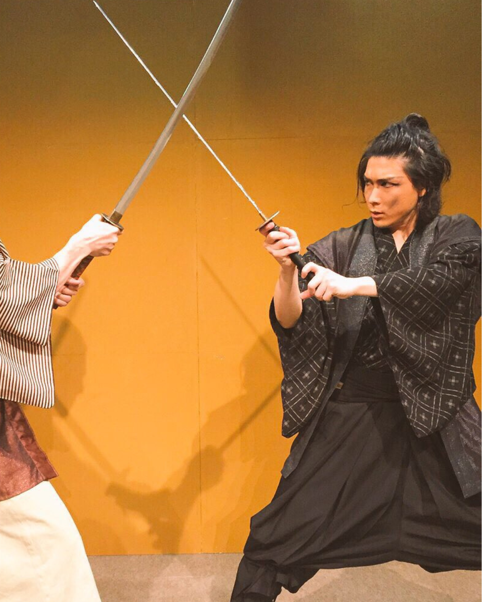

A small journey through Japan, delivered to your door.
It Begins with Sunrise
January 1st, 2025. A light that changed everything.
Standing before the first sunrise of the year, Hiroshi felt one clear thought: "I want to deliver this — this atmosphere, this stillness — to the world."

It Begins with Sunrise
Once an actor. Always a student of Japan.
As a Jidaigeki actor, Hiroshi learned more than performance. His master taught him the spirit of Zen. The beauty found within stillness. Delicate attentiveness.
Those sensations never left him.
Discoveries Across Japan
Not the famous spots. The ones you stumble into.
We traveled through Japan’s famous spots and its quieter corners — small towns, quiet streets, shops with no signs in English.
Discoveries Across Japan
"I've never seen anything like this."
That moment of being completely captivated — standing in front of something you've never encountered before, wanting to take it home.
That feeling is what Moncha is built around.
Discoveries Across Japan
Not just things. Reasons to bring them home.
We don't just select items. We look for the atmosphere of the land, the presence of the people, and the story behind each piece.
Shaped by Connection
From Japan to the world.
Even far apart, we can see the same things, feel the same things, and share words.
From the past to the present. From Japan to the world. From offline to online.
Your Journey Begins Here
Moncha is not yet a finished brand.
If you find your own small journey inside this box, that too is the continuation of Moncha.